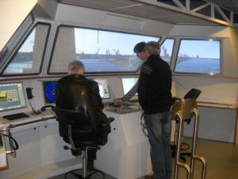

This course is aimed at marine officers and shore company personnel engaged in vetting inspections of oil, chemical and liquefied gas tankers. The material is based upon standard vessel inspection questionnaires and discusses the identification of good practice in addition to regulatory compliance. The material covers technical, psychological, leadership and regulatory issues associated with ships’ plant but also the observation of operational practices and SMS.
This course is aimed at marine officers and crew engaged in day to day works on board of any ship. The material is based upon Code of Safe Working Practices on board of merchant ship and discuses application of them on board. The material covers Permit to Work system, Risk analyses, Root Course analyses and other aspects related to safe work. The course can be company specific and include cross-references between company SMS and SWPMS Code.
This course is aimed at seafarers working in multinational crews on board the ship. The material is based upon experience of different companies, working with multinational crews and underlines the need to understand different national cultures, customs and traditions, the need of good communication and management of human resources on board.
This course is aimed at marine officers engaged in using of Gas Measuring Instruments for Atmosphere Assessment in the tanks and other compartments for safe entry, gas freeing, tank atmosphere quality control also maintenance and calibration of instruments on board. The material is based upon Requirements of SOLAS, VIQ and ISSGOT and discusses Good Working Practices and TBS in addition to regulatory compliance. The material covers theoretical and practical issues associated with atmosphere control and instruments maintenance, calibration and utilization based on Riken Keiki units.
This course is aimed at marine officers fulfilling managerial tasks on board the ship. The material is based upon STCW requirements for soft skills and discusses the identification of different leadership styles in different situations, the need of good communication skills and management of human resources on board. The material covers psychological and practical issues in leadership and application of them in day to day operations on board in order to implement safety culture good operational practices and SMS.